We looked at 18 rival sites, 22 tools UGC creators already use, 13 creator portfolios and UB's own live brand. Each direction below follows from those findings, and every text color passes WCAG AA. Every direction also works in the full prototype: open it and use the Look switcher.
rivals sell to brands, agencies or sellers. Only 4 speak to creators, so a tool built for creators has room to look like it.
Our audit of 18 rival sites, 16 Octrivals use pink or pink-red as their brand color. UB's coral sits inside that cluster. Gold and teal: 0 of 18.
Colors read from each live siteis the contrast of white text on UB's coral buttons. Normal text needs 4.5. The gold score is 2.42 and the cyan logo word 1.82.
WCAG 2.2, contrast minimumUB’s cyan is almost TikTok's own (#2DD4D8 vs #2DCCD3) and its coral sits next to TikTok red. TikTok lists color combinations in its brand terms.
TikTok Brand Hub, legal pageof UGC creators surveyed are women; 88% are 18 to 34, 59% are in their first year, and the median earns $1,500 a year from UGC.
NeoReach via Influencer Marketing Hub; Collabstr 2026creator tools they already use open on a light page, as do 7 of 8 portfolios creators made themselves. Light text reads better at small sizes.
Our capture of 22 tools; NN/g on dark modecreator portfolios use a serif display font, and 54% of 136 Canva UGC templates are named for beige, cream or brown.
Our capture of 13 portfolios; Canva template titlesrivals show a finished breakdown or script above the fold, and none puts a single 0 to 100 score on a thumbnail.
Our audit of 18 rival sites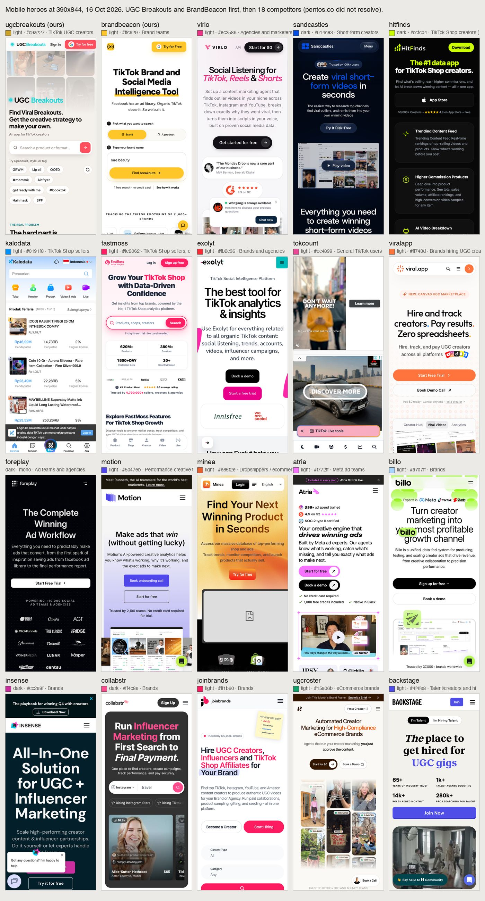
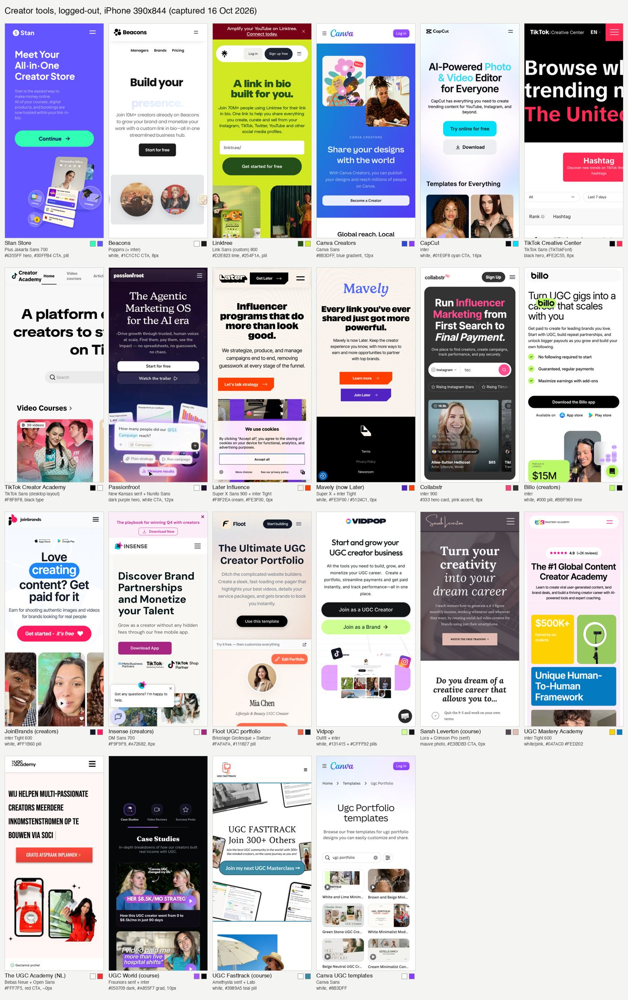
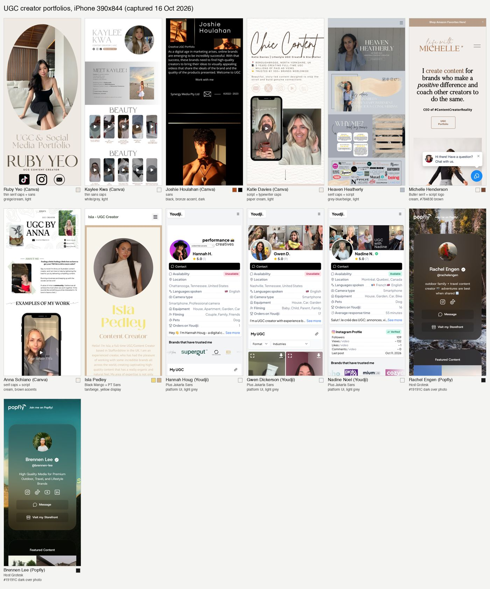
The prototype as it stands, for comparison. Coral buttons fail contrast and the palette sits next to TikTok's.
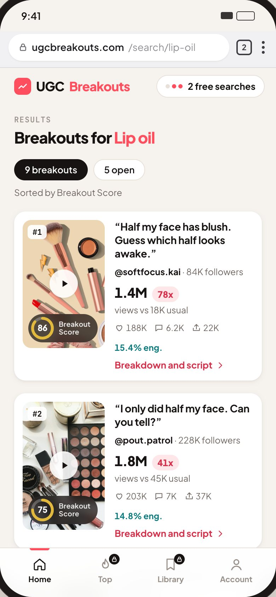
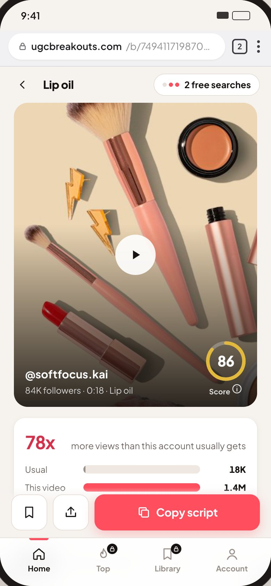
#F5F1EA · page#1A1613 · action, 17.98:1 white text#F2B705 · score and highlights, 9.89:1 ink text#7A5C00 · 6.25:1 on white#0A7276 · engagement, 5.70:1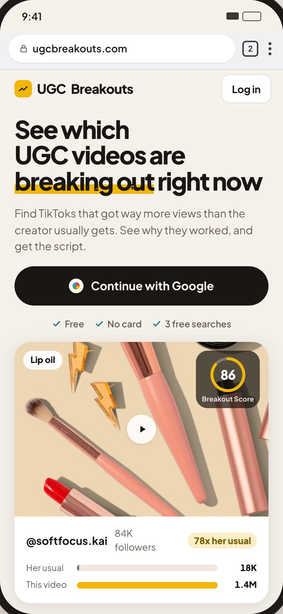
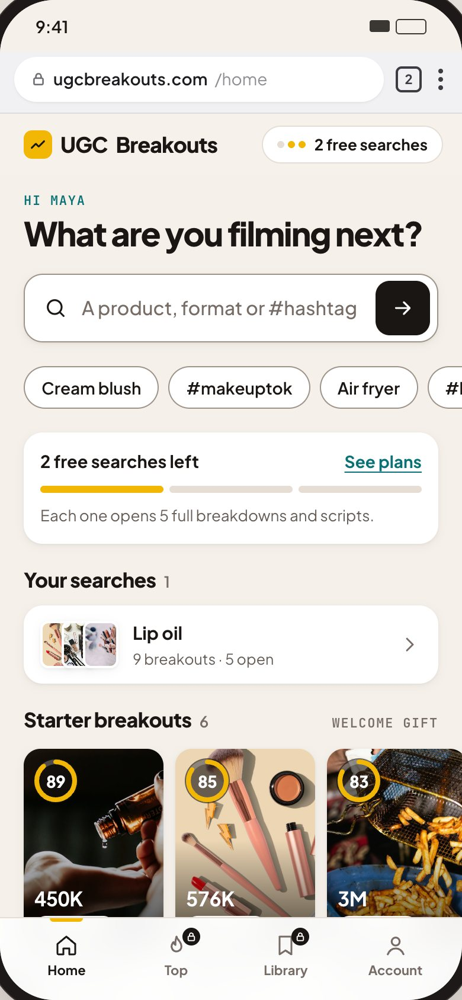
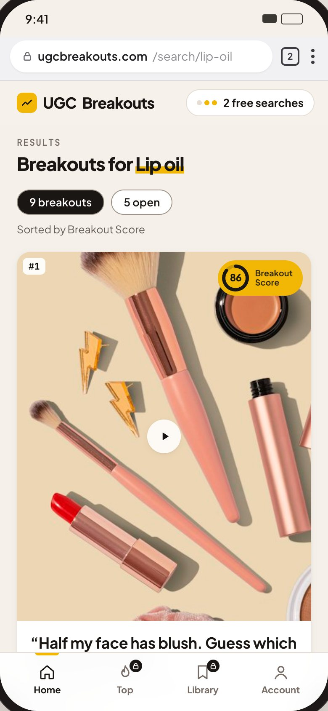
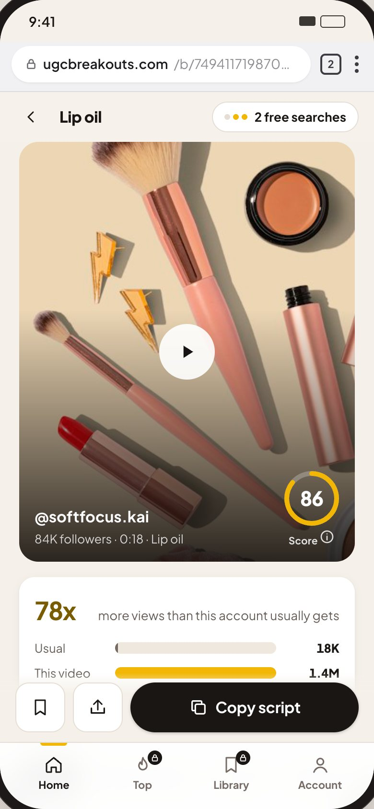
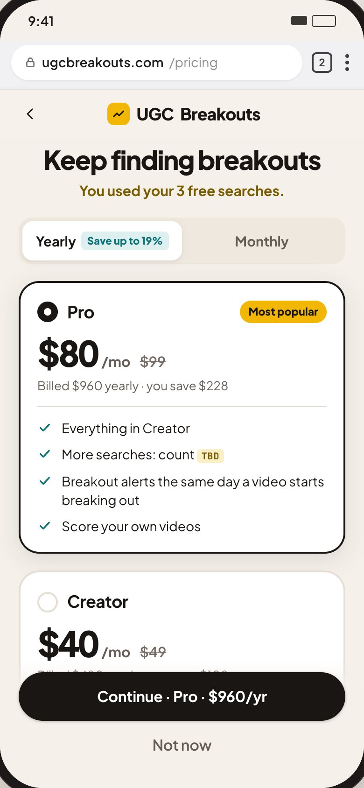
#F4EEE6 · page#2A1F1A · action, 16.04:1 white text#4F6F52 · data and highlights, 5.51:1#E2EADF · chip backgrounds#C9A46A · score ring on dark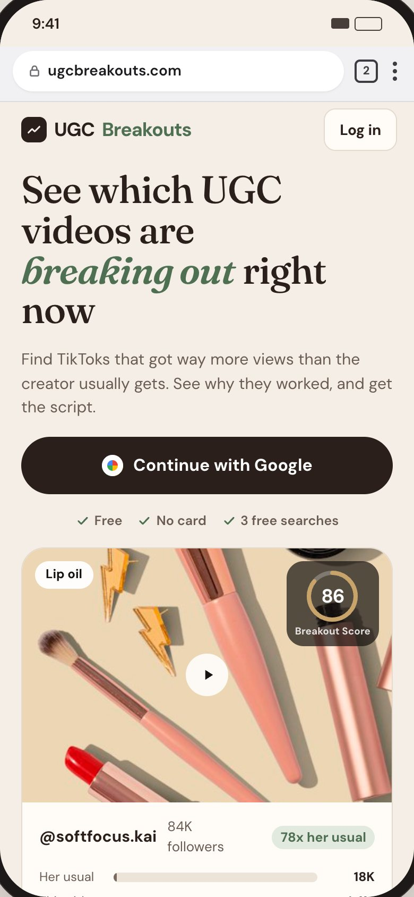
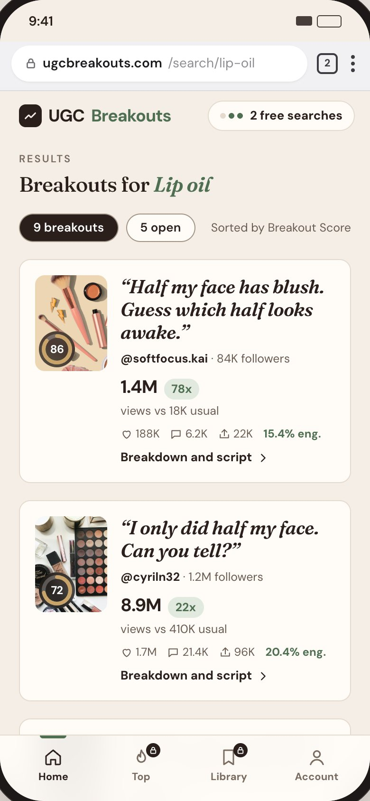
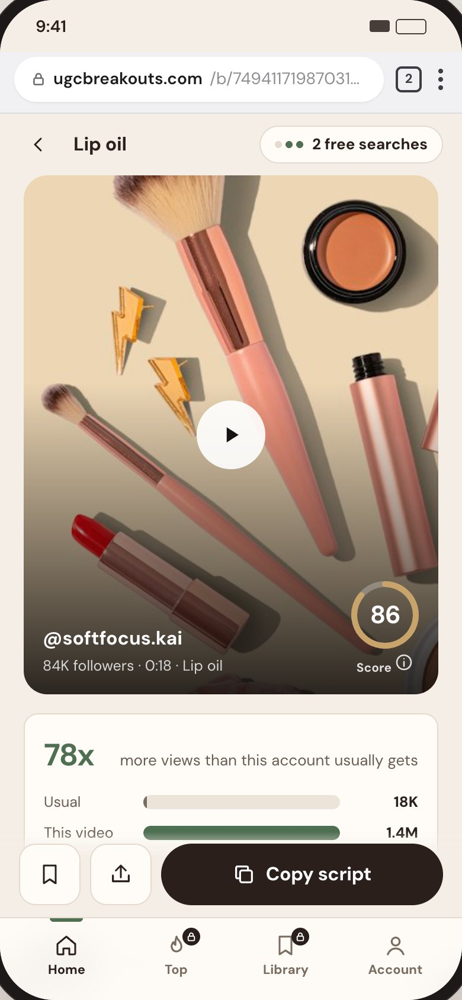
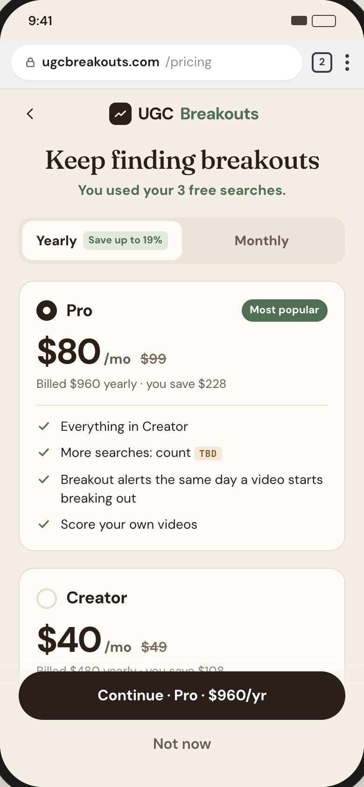
#F5F7F6 · page#0A6763 · action and data, 6.70:1#FFC629 · score, 11.77:1 ink text#0E1513 · text, 18.50:1#DDF0EE · chip backgrounds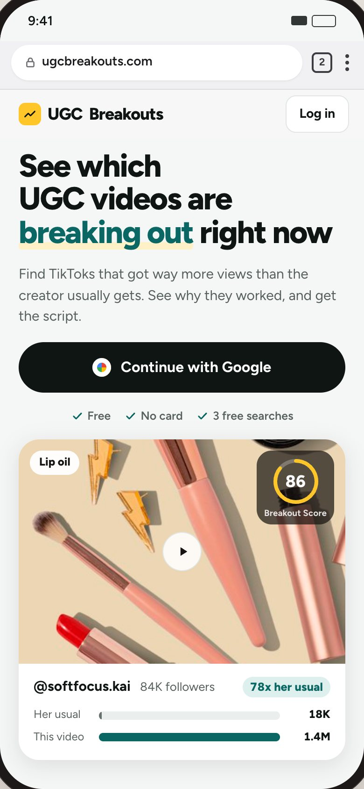
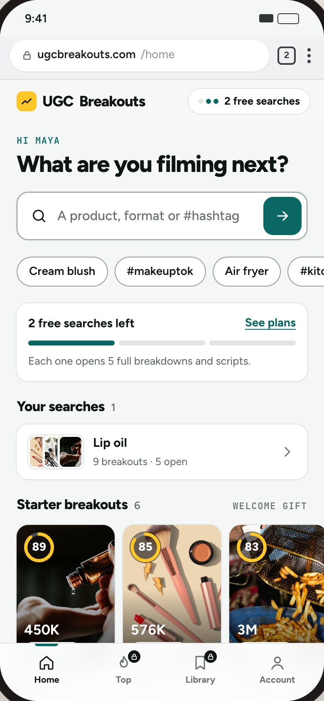
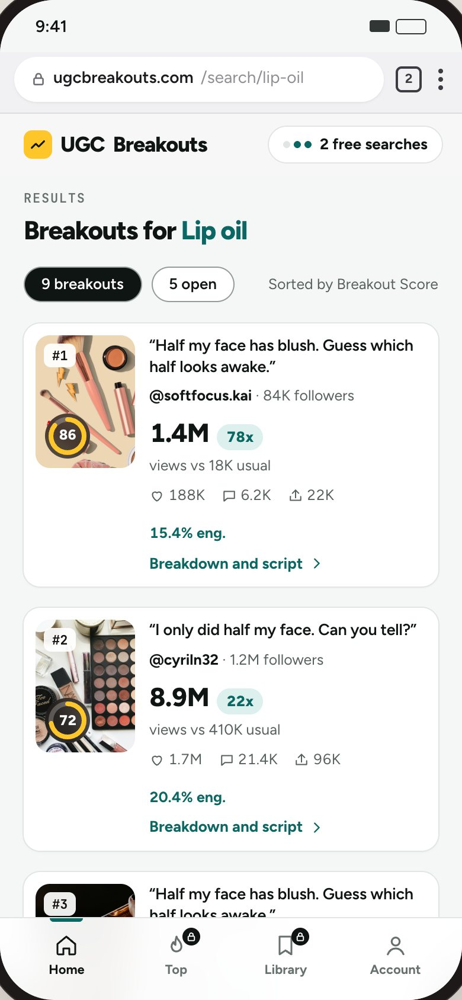
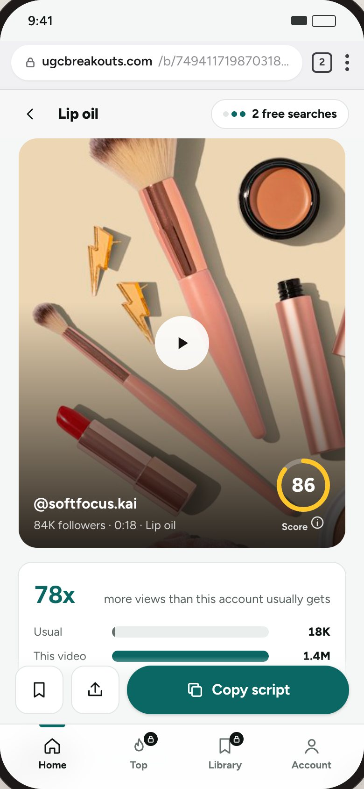
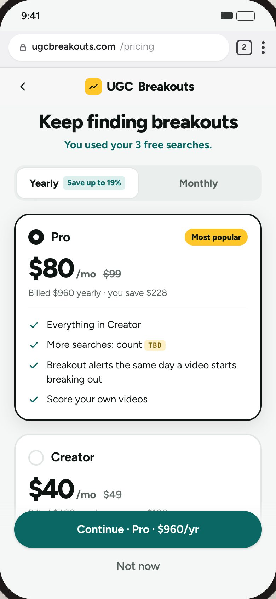
It fixes every contrast failure with the smallest change to what's live, takes the one color no rival uses, and links UB to BrandBeacon through BB's yellow. Pick B if UB should feel like the creator's own space, or C if UB and BrandBeacon should look like one product family.
Site colors, fonts and counts were read from each live page on 16 Oct 2026 (full data and 75 screenshots in our research folder).